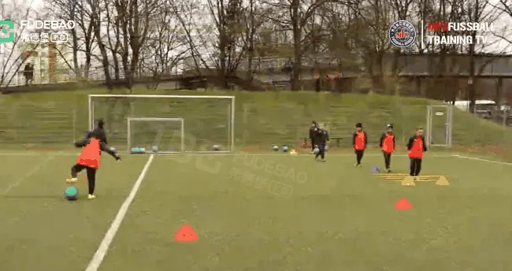
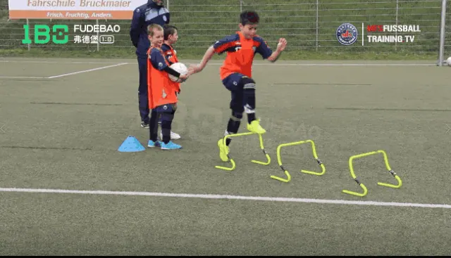

之前我们聊过，在慕尼黑足球学校（以下简称MFS）的青训理念中，协调与速度训练是很重要的一部分，身体协调性的很好理解，但如何给孩子进行速度训练呢？今天，就几个核心问题，与大家聊一聊速度训练的理念。
速度训练的必要性
速度训练其实涵盖的很广，比如球员的反应能力、奔跑速度、动作速度等，这些都可以归结在速度训练中。
一些训练理念中认为在孩子小的时候进行速度训练是没有意义的，MFS则不以为然。
12岁前孩子神经系统发育并不完全，在这个阶段我们要通过训练刺激孩子的神经系统，这样效率是非常高的。

速度的提升其实本质还是神经系统对身体的掌控能力。
一名球员如何才能跑得更快？需要球员跑步把使出的所有能量都真正的直接传递到腿部，这就需要在跑步时上半身肩部腰部保持稳定、要掌握正确的摆退摆臂姿势，而这些东西如果在孩子神经系统完全发育后在进行练习，效率就非常低了，因此在6-12岁这个阶段结合身体协调性进行速度练习是非常必要的。
速度训练方法
速度训练的核心指导方法是“质量大于数量”，举个例子，比如我们要安排球员进行最简单的跨栏练习，这是孩子们第一次进行协调与速度练习，跨栏练习可以帮助他们掌握正确的跑步姿势

教练首先要做到的是示范正确的动作，告诉孩子们如何摆腿，如何折叠小腿。孩子们的前两次练习可以用较慢的速度进行，教练要观察每一个孩子，纠正错误。如果一开始的动作就是错的，那么练习50遍100遍也是没有用的；
孩子掌握正确的动作后，再进行速度的提升，让孩子尝试尽可能快的速度完成跨栏的动作，动作标准但是速度非常慢也是没有意义的。
对于大一些的孩子，我们还可以利用弹力或者上坡跑的形式带进行辅助，帮助他们拿出更快的速度。
总体的优先级是动作标准完成>动作完成速度>重复练习次数
当然，重复练习也不是次数越多越好
一名孩子重复了几次后我们发现他有疲劳感，冲刺速度下降，此时教练应该立刻停止练习，短暂休息之后再进行第二轮或者第三轮的练习，让孩子不断挑战更快的速度才是速度训练的意义。
教练也要提前告诉球员这一点，让他们不要分心，专注于训练器械，用最快的速度通过，速度训练中“应付差事”没有任何意义。
同一个训练结构我们要安排不同的变换练习来从不同的侧重点提升球员速度，比如这个最基础的横杆跳跃练习中
除了最开始的正面跳跃，还应该加上侧向和背向通过的练习。
同时，在每周的练习中，教练应该记录球员的情况，你会发现孩子们的速度越来越快，弹跳越来越好。一段时间后，你会发现孩子们开始停滞不前，这种情况下，想要进一步提升的话，就需要一些变化，比如可以给孩子增加一些重量，增加上臂动作，让他们抱球上下挥舞；亦或者可以增加跨栏的高度。帮助孩子有持续的提升。
针对速度训练，慕尼黑足球学校开发出了“三阶段模型”。
第一阶段是基础阶段，顾名思义，基础阶段是为了让球员们的身体做好准备，是针对少儿肌肉系统稳定性和基础力量，让肌肉先适应基础的跳跃，为后面两个阶段打好基础。


这个阶段主要以非周期性动作的练习为主，不要进行周期性的跑步动作。
第二阶段就要开始周期性动作的练习，目的是培养周期性动作的稳固程度，也就是要开始真正意义上的跑步练习了。
这个阶段我们可以从最基础的跑步姿势开始，在跑步中可以流畅的摆臂、抬腿、蹬地，很标准的完成跑跳动作。

可以从最基础的跨栏跑练习开始，帮助孩子掌握正确的跑步姿势
另一个重点则是提升球员的脚下频率与冲刺速度。足球中的跑步速度对步频的要求更高，更快的步频意味着你有更多次的处理球的机会，比如梅西，他的很多过人动作都是建立在高步频的基础上的。

TIPS:
周期性运动是指有单一的结构动作，动作环节相对较少，例如跑步（其中的摆臂，蹬伸）、游泳、划船等。
而非周期性运动将几种单一的动作混合起来，例如足球中带球跑变向后射门，它的整个过程不具有周期性，没有将单一动作环节的重复
第三阶段，目的是要帮助球员形成复杂动作的神经联系、提高技能的储备量以便学习复杂技术动作，提高协调性和时空感知的能力。训练的重点是身体协调性、跑动中的变向能力、反应速度与动作速度。

最后，再来说说大家最关心的速度训练的训练周期与频率。
我们最好在孩子12岁神经系统发育完全之前就开始进行速度训练，对于6-12岁的孩子，他们每周会进行2-3次的训练，这种情况下，MFS认为最理想的速度训练频率是每周进行1次速度练习，可以单独安排，也可以跟其他的常规训练穿插在一起。
我们可以以12次训练，也就是三个月为一个速度训练的周期，每周训练1次，每月训练4次。
- 第一个月给孩子安排第一阶段与第二阶段的练习，分别单独进行跳跃动作与跑动动作的练习。
- 第二个月安排第二阶段与第三阶段的练习，重点还是在步频与冲刺速度的提升上面，但也要加入一些反应速度和协调性相关的内容。
- 第三个月进行第三阶段与第一阶段的练习，第三个月进行的第一阶段练习与第一个月相比应该是“加强版的”，比如我们可以提升栏架的高度、或者要求孩子落地时重心放的更低等。
三个月周期结束，我们可以在中间暂停一周速度练习，然后再开始下一个周期。每个周期结束后都要监测球员的变化，最开始的训练带来的提升应该是十分明显的，时刻关注球员的变化，循序渐进提升训练难度。
如此，整个培养过程中是按照人体神经和骨骼肌系统发育的规律，技术动作由易到难的原则进行安排。就像拼积木一样，先把最小的模块组装起来（建立单一动作的神经联系），动作从身体局部单一动作过渡到全身性的训练，最终让球员能在提升速度的同时，合理的完成兼具灵活、稳定的复杂动作。
文字与图片版权归各自权利人所有；排版根据抓取内容整理。